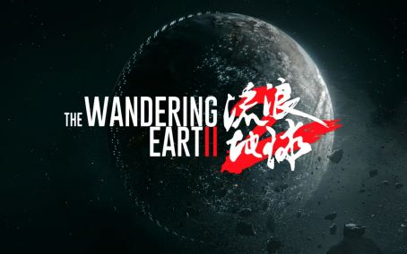

流浪地球2
故事背景
《流浪地球2》故事背景如下： 在不远的未来，太阳急速衰老膨胀，几百年内将吞噬整个太阳系。地球各国成立联合政府，提出多个自救计划， 包括移山计划、方舟计划、逐月计划和数字生命计划。世界政局动荡，战争频发，人类转入以航天工业为主的计划经济社会。
剧情简介
影片主要讲述了人类为应对太阳危机，在地球表面建造巨大推进器以寻找新家园的过程。在此期间，危机四伏，人们展开生死之战。 刘培强是素质突出的航天员，他成功粉碎了毁灭太空站的阴谋，促进了“移山计划”的验证。图恒宇是科学家，其女儿图丫丫在车祸后数据被保存， 他希望通过数字生命计划让女儿拥有完整人生。在这个过程中，涉及月球危机、全球核武器运输等问题。 刘培强和图恒宇在不同线路上努力，最终都取得成功，推动地球踏上流浪之旅。
人物介绍
- 吴京 饰 刘培强
- 刘德华 饰 图恒宇
- 李雪健 饰 周喆直
- 沙溢 饰 张鹏
- 宁理 饰 马兆
- 王智 饰 韩朵朵
电影评分
| 评分平台 | 评分 | 参与人数 |
|---|---|---|
| 豆瓣电影 | 8.3 | 1,234,567 |
| IMDb | 7.8 | 89,012 |
| 猫眼电影 | 9.2 | 2,345,678 |